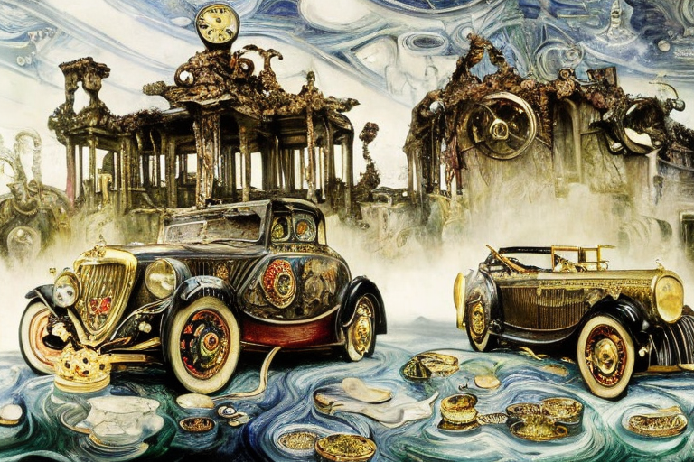
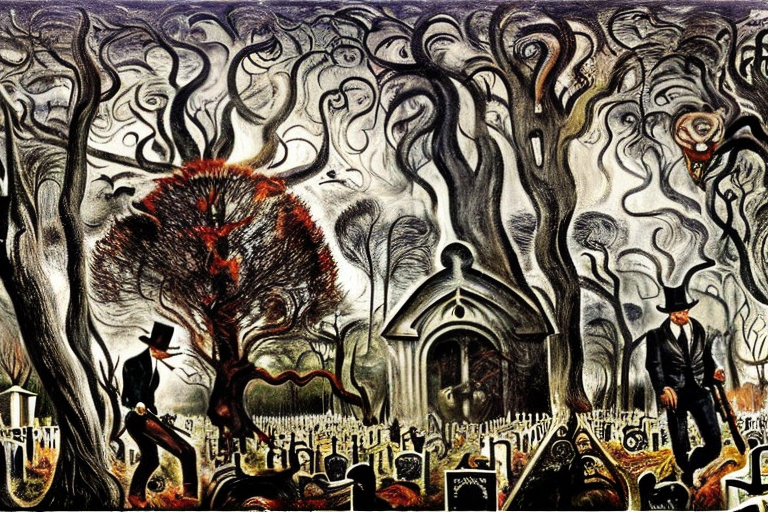
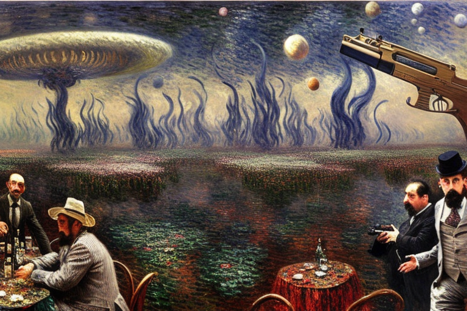
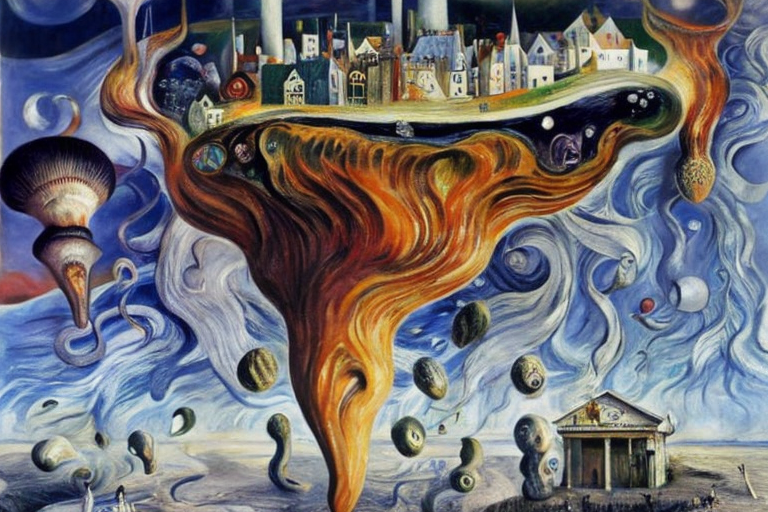

Το ατομικό νόμισμα και οι ληστές
Αρχική Σελίδα
Πίνακας Περιεχομένων
Η ατομική νομισματική

Σε έναν μακρινό γαλαξία, σε έναν πλανήτη περιστρεφόμενο γύρω από ένα αστέρι όμοιο του δικού μας, συνέβη μια ανακάλυψη που κλόνισε τα ίδια τα θεμέλια της φυσικής και της οικονομίας. Το ατομικό νόμισμα, μια μορφή χρήματος που αποτελείται από μεμονωμένα άτομα, είχε ανακαλυφθεί. Οι συνέπειες αυτής της ανακάλυψης ήταν συγκλονιστικές και πυροδότησε μια ξέφρενη ζήτηση για την κατανόηση των ιδιοτήτων αυτής της νέας μορφής χρήματος.
Καθώς τα νέα διαδόθηκαν σε όλο τον γαλαξία, επιστήμονες και οικονομολόγοι συνέρρεαν στον πλανήτη για να μελετήσουν το ατομικό νόμισμα. Ανακάλυψαν ότι κάθε άτομο ήταν μοναδικό, με τις δικές του ξεχωριστές ιδιότητες που καθόριζαν την αξία του. Αυτά τα άτομα συνδέοταν μεταξύ τους, σχηματίζοντας μια περίπλοκή δομή πλέγματος που αποτελούσε το νόμισμα.
Το ατομικό νόμισμα ήταν απίστευτα πυκνό, με ένα μόνο άτομο να ζυγίζει περισσότερο από έναν τόνο. Ήταν επίσης απίστευτα ανθεκτικό, με τη δομή του πλέγματος να παρέχει τεράστια αντοχή και ελαστικότητα. Ωστόσο, η πιο ενδιαφέρουσα ιδιότητα του ατομικού νομίσματος ήταν η ικανότητά του να αποθηκεύει πληροφορίες.
Κάθε άτομο περιείχε έναν τεράστιο όγκο πληροφοριών, συμπεριλαμβανομένου του ιστορικού κάθε συναλλαγής στην οποία είχε εμπλακεί, καθώς και την τρέχουσα αξία και τοποθεσία του. Αυτές οι πληροφορίες αποθηκεύοταν στην περίπλοκη δομή πλέγματος, η οποία λειτουργούσε ως ένα είδος κβαντικού υπολογιστή, ικανού να εκτελεί σύνθετους υπολογισμούς με ταχύτητα που ήταν πέρα από κάθε φαντασία.
Καθώς οι επιστήμονες ενεβάθυναν στις ιδιότητες του ατομικού νομίσματος, άρχισαν να αποκαλύπτουν νέα και απροσδόκητα φαινόμενα. Ανακάλυψαν ότι τα άτομα μπορούσαν να ελεγχθούν, προκαλώντας μία δόνηση σε συγκεκριμένες συχνότητες ώστε να εκπέμπουν μια συγκεκριμένη ενεργειακή υπογραφή. Αξιοποιώντας αυτή την ενέργεια, μπόρεσαν να δημιουργήσουν νέες μορφές νομισμάτων, η καθεμία με τις δικές της μοναδικές ιδιότητες και χρήσεις.
Η εξέλιξη της νομισματικής τεχνολογίας

Η ανακάλυψη του ατομικού νομίσματος άφησε άναυδους τους άπαντες στον γαλαξία και όλοι διεκδικούσαν ένα μερίδιο αγοράς. Κυβερνήσεις, εταιρείες, ακόμη και μεμονωμένοι επενδυτές συνωστίζοταν για μια ευκαιρία να πάρουν στα χέρια τους αυτή τη νέα μορφή χρήματος. Αλλά ο δρόμος προς το ατομικό νόμισμα δεν ήταν εύκολος.
Όλα ξεκίνησαν με ογκώδεις μπλάνες χρημάτων που κυριαρχούσαν στην οικονομία του γαλαξία για αιώνες. Αυτές οι μπλάνες χρημάτων ήταν τεράστιες συσσωρεύσεις σωματιδίων, που το καθένα ζύγιζε δισεκατομμύρια τόνους. Ήταν δυσκίνητες και δύσκολες στη μεταφορά, αλλά αποτελούσαν τη ραχοκοκαλιά της οικονομίας.
Το πρόβλημα με τις μεγάλες μπλάνες χρημάτων ήταν το αδιαίρετό τους. Δεν μπορούσαν να υποδιαιρεθούν σε μικρότερες ονομαστικές αξίες, καθιστώντας δύσκολη τη διεξαγωγή συναλλαγών. Ήταν ένα απαρχαιωμένο σύστημα έτοιμο για αντικατάσταση.
Οι θεωρητικοί φυσικοί μελετούσαν τη θεμελιώδη φύση της ύλης για δεκαετίες, αναζητώντας έναν τρόπο να χωρίσουν τις μεγάλες μπλάνες χρημάτων σε πιο διαχειρίσιμες μονάδες. Και τελικά, βρήκαν μια λύση.
Μέσω μιας διαδικασίας κβαντικής σχάσης και σύντηξης των σωματιδίων, οι φυσικοί κατάφεραν να διασπάσουν τα σωματίδια των μεγάλων μπλάνων χρημάτων σε μεμονωμένα άτομα. Αυτά τα άτομα μπορούσαν στη συνέχεια να οργανωθούν στη δομή που μοιάζει με πλέγμα που σχημάτισε το ατομικό νόμισμα.
Ήταν μια επαναστατική σημαντική ανακάλυψη και μεταμόρφωσε ολόκληρη την οικονομία σε μια νύχτα. Οι μεγάλες μπλάνες χρημάτων δεν χρειάζονταν πλέον, αντικαταστάθηκαν από το ατομικό νόμισμα που μπορούσε εύκολα να εμπορευτεί και να μεταφερθεί.
Η συνάντηση με τους ληστές

Καθώς ο γαλαξίας εξαρτιόταν περισσότερο από το ατομικό νόμισμα, εμφανίστηκε μια νέα τάση. Οι άνθρωποι άρχισαν να μεταφέρουν τις μπλάνες χρήματος σε νεκροταφεία, όπου το έθαβαν μαζί με τα αγαπημένα τους πρόσωπα ως σύμβολο του πλούτου και της κληρονομιάς τους. Ήταν μια μακάβρια πρακτική, αλλά διαδόθηκε τάχιστα.
Μια μέρα, ένας πλούσιος επιχειρηματίας ονόματι Μάρκος αποφάσισε να σπρώξει μια μεγάλη μπλάνα χρήματος στο νεκροταφείο αντί να κουβαλήσει ατομικό νόμισμα. Είχε κερδίσει μια περιουσία στο παλιό σύστημα και δεν εμπιστευόταν το νέο ατομικό νόμισμα. Σκέφτηκε ότι θάβοντας τον πλούτο του σε φυσική μορφή θα τον προστάτευε από τις διακυμάνσεις της αγοράς.
Αλλά καθώς έσπρωξε την τεράστια μπλάνα χρημάτων στο δρόμο, συνειδητοποίησε γρήγορα το λάθος του. Η μπλανα ήταν πολύ βαριά και δυσκίνητη, και πάλευε να την μετακινήσει. Οι περαστικοί τον κοίταζαν με δυσπιστία καθώς εκείνος φυσούσε και ξεφυσούσε, με τον ιδρώτα να τρέχει υπο το βάρος του πλούτου του.
Καθώς πλησίαζε στο νεκροταφείο, είδε ότι η πύλη ήταν πολύ στενή για να περάσει την μπλάνα. Προσπάθησε να την σπρώξει με όλη του την δύναμη, αλλά παρέμενε ακούνητη. Απογοητευμένος και κουρασμένος, έκατσε κάτω στο έδαφος και αναρωτιόταν τι θα κάνει.
Τότε ήταν που άκουσε ένα θρόισμα από τα κοντινά δέντρα. Μέσα από τις σκιές αναδύθηκε μια ομάδα ληστών, με τα μάτια καρφωμένα στην μπλάνα χρημάτων. Τον παρακολουθούσαν από μακριά, περιμένοντας την κατάλληλη στιγμή για να χτυπήσουν.
Ο Μάρκος προσπάθησε να αμυνθεί, αλλά ήταν αβοήθητος εναντίον των ληστών. Τον γρονθοκόπησαν και ξέφυγαν με την μπλάνα χρήματος, αφήνοντάς τον χτυπημένο και μελανιασμένο στο έδαφος.
Η εμφάνιση της συμμορίας

Μετά το περιστατικό με τον Μάρκο, οι ληστές έγιναν πιο τολμηροί και πιο οργανωμένοι. Ήξεραν ότι υπήρχαν ακόμα άνθρωποι εκεί έξω που προτιμούσαν τις παλιές μπλάνες χρημάτων από το νέο ατομικό νόμισμα, και ήταν αποφασισμένοι να εκμεταλλευτούν αυτή την αδυναμία.
Τριγυρνούσαν στους δρόμους, αναζητώντας ανθρώπους που κουβαλούσαν μεγάλες μπλάνες χρημάτων. Ήξεραν ότι οι μπλάνες ήταν δυσκίνητες και δύσκολο να κρυφτούν, καθιστώντας τους εύκολους στόχους. Αντίθετα, το ατομικό νόμισμα ήταν πολύ πιο εύκολο να κρυφτεί σε μια τσέπη ή ένα μικρό δοχείο, καθιστώντας το λιγότερο ελκυστικό στόχο για τους κλέφτες.
Καθώς οι ληστές έγιναν πιο θρασύδειλοι, οι άνθρωποι άρχισαν να προσαρμόζονται. Έμαθαν να κρατούν κρυμμένο τον πλούτο τους, κουβαλώντας μαζί τους μόνο μικρές ποσότητες ατομικού νομίσματος. Έθαβαν το υπόλοιπο σε μυστικές τοποθεσίες, ελπίζοντας να το κρατήσουν ασφαλές από τα αδιάκριτα βλέμματα των ληστών.
Αλλά ακόμα και με αυτές τις προφυλάξεις, οι ληστές κατάφεραν να βρουν τους στόχους τους. Καραδοκούσαν στις σκιές, περιμένοντας την κατάλληλη στιγμή για να χτυπήσουν. Και όταν το αποτολμούσαν, ήταν αδίστακτοι και αποτελεσματικοί, αφήνοντας τα θύματά τους χτυπημένα και αιμόφυρτα στο έδαφος.
Ήταν μια επικίνδυνη εποχή για τον γαλαξία και οι άνθρωποι ζούσαν με τον φόβο των ληστών. Ψιθύριζαν για αυτούς με σιωπηλούς τόνους, προειδοποιώντας τους αγαπημένους τους να είναι προσεκτικοί. Όμως, λόγω του κινδύνου, το ατομικό νόμισμα συνέχισε να κερδίζει αποδοχή, αντικαθιστώντας αργά αλλά σταθερά τις μπλάνες χρημάτων που κάποτε ήταν ο κανόνας.
Η θεωρία της μετατροπής

Καθώς περνούσαν τα χρόνια, μια νέα θεωρία εμφανίστηκε για την τύχη των μεγάλων μπλάνων χρημάτων. Οι θεωρητικοί φυσικοί υπέθεσαν ότι η τεράστια πίεση και βάρος που κυριαρχούν σε αυτές τις μπλάνες χρημάτων με την πάροδο του χρόνου οδηγεί στη σταδιακή αποσύνθεσή τους σε ατομικό νόμισμα.
Οι δυνάμεις που αναπτύσσονται για να συμβεί αυτός ο μετασχηματισμός είναι τεράστιες. Οι μπλάνες χρημάτων αποτελούνται από σωματίδια που συγκρατώνται μεταξύ τους από ισχυρές πυρηνικές δυνάμεις. Αλλά καθώς περνάει ο χρόνος τα σωματίδια υποβαλλόντται σε τεράστια πίεση και δύναμη, οι πυρηνικές δυνάμεις εξασθενούν, οδηγώντας στη διάσπαση των μπλάνων.
Καθώς οι μπλάνες διαλυόνται, τα σωματίδια μετατρέπονται στο ατομικό νόμισμα που καταλήγει ο κανόνας στον γαλαξία. Η μεταμόρφωση είναι αργή και σταδιακή, αλλά είναι μια φυσική διαδικασία που συμβαίνει με την πάροδο του χρόνου.
Οι θεωρητικοί φυσικοί επικέντρωσαν σε αυτή τη διαδικασία και τη μελέτησαν εκτενώς. Ανακάλυψαν ότι η αποσύνθεση των μπλάνων χρημάτων δεν ήταν τυχαία, αλλά ακολουθούσε μία συγκεκριμένη διαδικασία βασισμένη στις ιδιότητες των σωματιδίων μέσα στις μπλάνες.
Καθώς ενεβάθυναν σε αυτό το φαινόμενο, συνειδητοποίησαν ότι η μετατροπή των μπλάνων χρημάτων σε ατομικό νόμισμα δεν ήταν απλώς μια φυσική διαδικασία, αλλά είχε επιπτώσεις και στον μεταφυσικό κόσμο.
Υπέθεσαν ότι ο μετασχηματισμός των μπλάνων χρημάτων σχετιζόταν με την έννοια των νεκροταφείων, όπου τα φυσικά σώματα των όντων αναπαύονταν μετά το θάνατο τους. Με τον ίδιο τρόπο που οι μπλάνες των χρημάτων σταδιακά διαλύονται σε ατομικό νόμισμα, έτσι και τα φυσικά σώματα των όντων αποσυντίθονται και επιστρέφουν στη γη.
Αυτή η θεωρία πυροδότησε ένα νέο κύμα φιλοσοφικών και μεταφυσικών συζητήσεων σε όλο τον γαλαξία. Οι άνθρωποι άρχισαν να αμφισβητούν τη φύση της ζωής και του θανάτου και τη σχέση μεταξύ του φυσικού και του μεταφυσικού κόσμου.
Όσο για τους ληστές, σιγά σιγά ξεθώριασαν στην αφάνεια καθώς το ατομικό νόμισμα έγινε ο κανόνας. Ο φόβος και ο τρόμος που προκαλούσαν κάποτε στους ανθρώπους του γαλαξία δεν ταίριαζαν με τις φυσικές διαδικασίες που διέπουν το σύμπαν.
Και έτσι, ο γαλαξίας συνέχισε να εξελίσσεται και να αλλάζει, οδηγούμενος τόσο από τους φυσικούς νόμους που διέπουν το σύμπαν όσο και από τις φιλοσοφικές και μεταφυσικές συζητήσεις που διαμόρφωσαν την κατανόησή του για τον κόσμο.